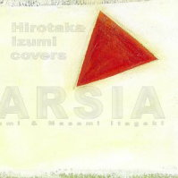

covers NOSTARSIA
和泉宏隆トリオ和泉宏隆 (p) / 村上聖 (b) / 板垣正美 (ds)
About the Album
作品紹介
covers NOSTARSIA /和泉宏隆トリオ
70年代から80年代にかけての、ソウル、R&B、AOR、そして純然たるポップスの名曲の数々が、ピアノ・トリオで今甦る!!
「Lights In A Distance」から通算4枚目となる和泉宏隆ピアノ・トリオの新作は、洋楽著名曲のカヴァー・アルバムです。ファンからのリクエストをも反映しつつ、数多くの候補の中から厳選されたピアノ・トリオ向きなベスト選曲をしました。
ソロピアノでの「covers LOVE SONGS」に続き、老若男女を問わずお楽しみ頂ける1枚です。
和泉宏隆（ｐ）
村上聖（ｂ）
板垣正美（ｄｓ）
￥2,940(税込み）
1. SOMEDAY WE’LL ALL BE FREE
2. AS
3. YOU’VE GOT A FRIEND
4. I NEED TO BE IN LOVE
5. WHAT YOU WON’T DO FOR LOVE
6. ANTONIO’S SONG
7. WHAT’S GOING ON
8. YOUR SONG
9. THROUGH THE FIRE
10. VALDEZ IN THE COUNTRY
11. MAXIN
12. MIDNIGHT ANGEL